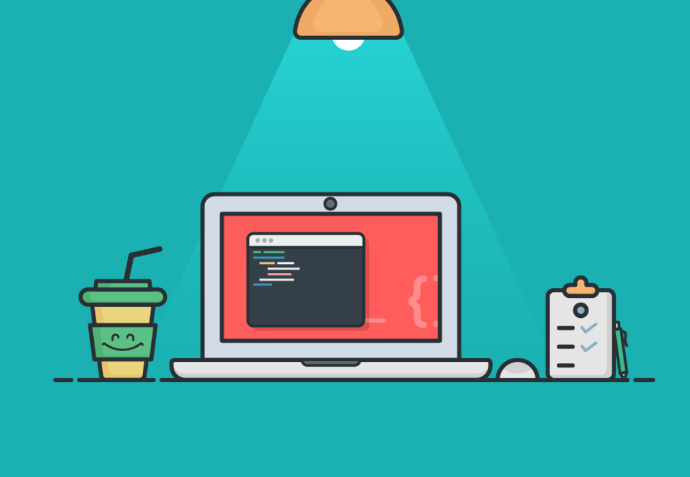

关于我
取名「思考问题的熊」后体型逐渐向 ID 发展，中科院生物信息学在读博士，正在为博士毕业和减肥做准备。生信技能树创始人团队成员、少数派高级作者。个人简历 定期更新；联系邮箱 hi@kaopubar.top记录所思所学
作为一个喜欢写字的人，不严格地回溯大四开始密集写作至今已有 6 年时间。不少好友都是通过写作和分享相识，5 年前的考研复习手册至今还会收到反馈，专业类学习笔记希望帮助到一些初学者，数字工具使用指南让我正在一名 Power User。会坚持通过博客记录日常的所思所学。
生物信息知识库
生信技能树成立至今三年多的时间里，我们积累了海量优质教程和各类稿件的同时也汇集了一大批优秀作者，更是拥有了 10 多万一起成长的读者。我们正在将生物信息不同领域的主干知识以「知识库」形式进行系统呈现，把多年的分享再做一次迭代和沉淀。希望所有对生物信息感兴趣的人在入门进阶的时候可以有章可循。

聊聊考研复习这件事
大四那一年关于「考研复习」这个主题前前后后写了二十多万字，经过几次修订已经整理成《靠谱学长说 聊聊考研复习这件事》。虽然已有几年没有更新但内容并不过时，如果你是因为考研复习找到这里，可以直接从阅读这本书开始，祝一切顺利，加油。
阅读
从不同角度罗列一些发起或参与的项目，如果博客文章不知从何看起或仅想了解某些方面内容可以从这里开始。播客
「熊言熊语」是一档关注科普和分享的播客栏目，主要面向高校在读学生，思考问题的熊和他的朋友们一起聊专业知识、聊学习工作、聊科研科普。首期节目于2020年3月4日上线,曾获喜马拉雅播客创作大赛三等奖。欢迎通过官网以及 Apple Podcast 和其它泛用型播客客户端订阅收听。节目列表